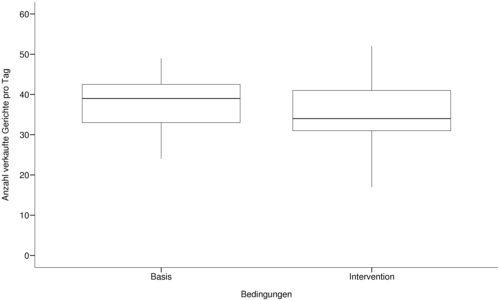
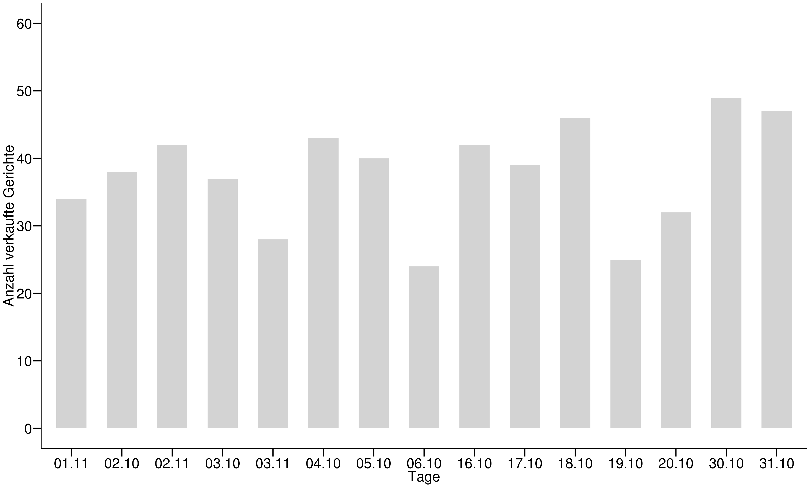
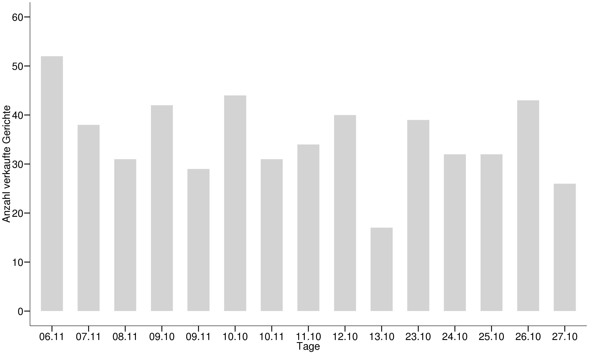

2.6 Übung B: Lösung
2.6.1 Musterlösung Aufgabe 1
## Lade Datei
library(tidyverse)
nova <- read_delim("13_Statistik1/data/novanimal.csv", delim = ";")
## definiere theme für die Plots
mytheme <- theme_classic() +
theme(axis.line = element_line(color = "black"), axis.text = element_text(size = 25, color = "black"), axis.title = element_text(size = 25, color = "black"), axis.ticks = element_line(size = 1, color = "black"), axis.ticks.length = unit(.5, "cm"))\(H_0\): Es gibt keine Unterschiede zwischen der Population und Stichprobe bezüglich Geschlecht und Hochschulzugehörigkeit.
\(H_1\): Es gibt Unterschiede zwischen der Population und Stichprobe bezüglich Geschlecht und Hochschulzugehörigkeit.
# Gruppiere und fasse die Variablen nach Geschlecht und Hochschulzugehörigkeit zusammen
canteen <- group_by(nova, gender, member) %>%
summarise(tot = n()) %>%
ungroup() %>%
mutate(canteen_member = c("Mitarbeiterinnen", "Studentinnen", "Mitarbeiter", "Studenten")) # Fasse die ersten beiden Variablen zusammen
# Definiere einen Vektor mit erwarteten Häufigkeiten, beachte dabei die Reihenfolge
population_exp <- c(.15,.32,.16,.37) # erwartete Verteilung der Population (Achtung die Summe muss 1 ergeben)
# Berechne den Chi-Quadrat-Test
chi_sq <- chisq.test(canteen$tot, p = population_exp)
chi_sq
##
## Chi-squared test for given probabilities
##
## data: canteen$tot
## X-squared = 19.891, df = 3, p-value = 0.0001788
# Führe einen exakten Fisher Test durch
# erstelle dafür einen neuen Datensatz. tibble(), ist eine ähnliche Funktion wie data.frame() vom Hause tidyverse
fisher_t <- tibble(member = c("Mitarbeiterinnen", "Studentinnen", "Mitarbeiter", "Studenten"),
population = population_exp * 2138, # absolute Zahlen der Population Mitarbeiterinnen, Studentinnen, Mitarbeiter, Studenten => Fisher exakt test kann nicht mit erwarteten Wahrscheinlichkeiten rechnen
stichprobe = canteen$tot,
population_pct = population_exp,
canteen_pct = canteen$tot / sum(canteen$tot))
fish <- fisher.test(fisher_t[ ,2:3]) # was sind die Unterschiede zwischen den beiden Tests (Chisquare und Fisher exakt Test)? Wieso gibt es keinen OR aus?
fish
##
## Fisher's Exact Test for Count Data
##
## data: fisher_t[, 2:3]
## p-value = 0.003932
## alternative hypothesis: two.sidedDer \(\chi^2\)-Test sagt uns, dass die NOVANIMAL-Stichprobe von der Population signifikant unterscheidet (\(\chi^2\)(3) = 19.891, p > .0001). Auch der exakte Fisher-Test zeigt einen ähnlichen p-Wert (p = 0.004). Demnach ist unsere Stichprobe im Geschlecht und in der Hochschuzugehörigkeit nicht für die Population repräsentativ. Es scheint, dass die Studentinnen unter- und die Studenten übervertreten sind.
2.6.2 Musterlösung Aufgabe 2
\(H_0\): Es gibt keine Unterschiede in den Verkaufszahlen zwischen Basis- und Interventionswochen.
\(H_1\): Es gibt Unterschiede in den Verkaufszahlen zwischen Basis- und Interventionswochen.
# Daten müssen zuerst nach "week" und "condition" zusammengefasst werden
df <- nova %>%
group_by(date, condit) %>%
summarise(tot_sold = n()) %>% # zählt alle Beobachtungen gemäss dem group_by zusammen
mutate(day = format(date, format = "%d.%m")) # erstelle neue Variable, damit beim Historgamm die X-Achse besser leserlich wird
# Testen der Voraussetzungen
ggplot(df, aes(x = condit, y= tot_sold)) +
geom_boxplot(fill = "white", color = "black") +
scale_y_continuous(breaks = seq(0,60,10), limits = c(0,60)) +
labs(x="\nBedingungen", y="Anzahl verkaufte Gerichte pro Tag\n") +
# annotate("text", x = 1.5, y = 10,
# label = paste0("italic(p) == ", round(t_test$p.value, 3)),
# parse = TRUE, size = 8) +
mytheme
# Histogramme für die Bedingungen Basis
df %>% filter(condit == "Basis") %>%
ggplot(aes(x = as.factor(day), y= tot_sold)) +
geom_bar(stat = "identity", fill = "lightgrey", width = .6) +
scale_y_continuous(breaks = seq(0,60,10), limits = c(0,60)) +
labs(x="Tage", y="Anzahl verkaufte Gerichte") +
mytheme
# Histogramme für die Bedingungen Intervention
df %>% filter(condit == "Intervention") %>%
ggplot(aes(x = as.factor(day), y= tot_sold)) +
geom_bar(stat = "identity", fill = "lightgrey", width = .6) +
scale_y_continuous(breaks = seq(0,60,10), limits = c(0,60)) +
labs(x="Tage", y="Anzahl verkaufte Gerichte") +
mytheme
# Durchführung eines t-Tests
t_test <- t.test(df[df$condit == "Basis", ]$tot_sold, df[df$condit == "Intervention", ]$tot_sold, var.equal = F) # siehe ungerichtete Hypothese
t_test
##
## Welch Two Sample t-test
##
## data: df[df$condit == "Basis", ]$tot_sold and df[df$condit == "Intervention", ]$tot_sold
## t = 0.80464, df = 27.747, p-value = 0.4279
## alternative hypothesis: true difference in means is not equal to 0
## 95 percent confidence interval:
## -3.712298 8.512298
## sample estimates:
## mean of x mean of y
## 37.73333 35.33333In den Basiswochen werden mehr Gerichte als in den Interventionsowchen verkauft. Die wöchentlichen Verkaufszahlen zwischen den Bedigungen (Basis oder Intervention) unterscheiden sich jedoch nicht signifikant (t(27.75) = 0.8046 , p = 0.428.
2.6.3 Referenzen
Canty, Angelo, and Brian Ripley. 2017. Boot: Bootstrap Functions (Originally by Angelo Canty for S). https://CRAN.R-project.org/package=boot.
Crawley, Michael J. 2015. Statistics: An Introduction Using R. Wiley. http://onlinelibrary.wiley.com/book/10.1002/9781119941750.
Fox, John, Sanford Weisberg, and Brad Price. 2018a. Car: Companion to Applied Regression. https://CRAN.R-project.org/package=car.
———. 2018b. CarData: Companion to Applied Regression Data Sets. https://CRAN.R-project.org/package=carData.
Henry, Lionel, and Hadley Wickham. 2018. Purrr: Functional Programming Tools. https://CRAN.R-project.org/package=purrr.
Horikoshi, Masaaki, and Yuan Tang. 2018. Ggfortify: Data Visualization Tools for Statistical Analysis Results. https://CRAN.R-project.org/package=ggfortify.
Logan, Murray. 2010. Biostatistical Design and Analysis Using R : A Practical Guide. Wiley-Blackwell. http://onlinelibrary.wiley.com/book/10.1002/9781444319620.
Müller, Kirill. 2018. Bindrcpp: An ’Rcpp’ Interface to Active Bindings. https://CRAN.R-project.org/package=bindrcpp.
Müller, Kirill, and Hadley Wickham. 2018. Tibble: Simple Data Frames. https://CRAN.R-project.org/package=tibble.
Wickham, Hadley. 2017. Tidyverse: Easily Install and Load the ’Tidyverse’. https://CRAN.R-project.org/package=tidyverse.
———. 2018a. Forcats: Tools for Working with Categorical Variables (Factors). https://CRAN.R-project.org/package=forcats.
———. 2018b. Stringr: Simple, Consistent Wrappers for Common String Operations. https://CRAN.R-project.org/package=stringr.
Wickham, Hadley, and Lionel Henry. 2018. Tidyr: Easily Tidy Data with ’Spread()’ and ’Gather()’ Functions. https://CRAN.R-project.org/package=tidyr.
Wickham, Hadley, Winston Chang, Lionel Henry, Thomas Lin Pedersen, Kohske Takahashi, Claus Wilke, and Kara Woo. 2018. Ggplot2: Create Elegant Data Visualisations Using the Grammar of Graphics. https://CRAN.R-project.org/package=ggplot2.
Wickham, Hadley, Romain François, Lionel Henry, and Kirill Müller. 2018. Dplyr: A Grammar of Data Manipulation. https://CRAN.R-project.org/package=dplyr.
Wickham, Hadley, Jim Hester, and Romain Francois. 2017. Readr: Read Rectangular Text Data. https://CRAN.R-project.org/package=readr.